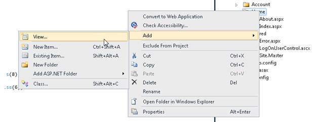
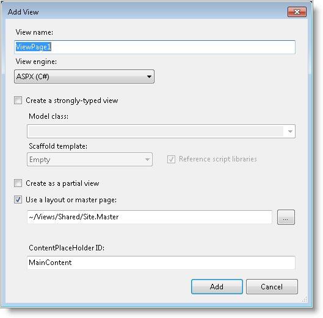

The following are the steps to create the Chart control in the View are:
1. Right-click the Views/Home folder.
2. Select Add > View.

Figure 1: Add View Menu
The Add View dialog will open.

3. Name the View as needed. For example SimpleChart.
4. Add the following code in the SimpleChart.aspx file, to create the Chart control in the View page.
|
View[ASPX] <%= Html.Chart("SimpleChart") .Skins(ChartModelSkins.Office2007Blue) .ShowLegend(false) .SmoothingMode(System.Drawing.Drawing2D.SmoothingMode.AntiAlias) .BorderAppearance(borderApp => { borderApp.SkinStyle(Syncfusion.Windows.Forms.Chart.ChartBorderSkinStyle.Pinned); }) %> |
1. Open ~/Controllers/HomeController.cs.
2. Include the following namespaces in the HomeController:
· Syncfusion.Mvc.Chart
· Syncfusion.Mvc.Shared
· Syncfusion.Windows.Forms.Chart
|
[C#]
using Syncfusion.Mvc.Chart; using Syncfusion.Mvc.Shared; using Syncfusion.Windows.Forms.Chart;
|
3. Add the action displayed below.
|
[C#]
/// <summary> /// Used to create the simple chart /// </summary> /// <returns>View page, it displays the Chart</returns> public ActionResult SimpleChart() { return View(); }
|
4. Run the application.
The following screenshot illustrates the sample output.

Figure 46: Chart control added to the application